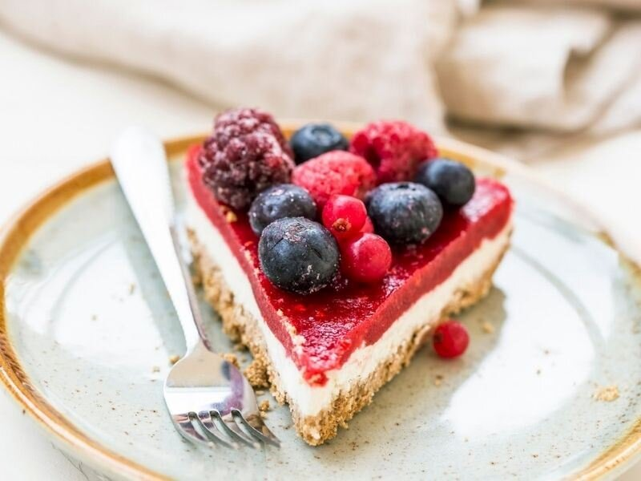

soğuk pasta tarifi
-
8 Kişilik
-
20 DK Hazırlama Süresi
-
5 DK Pişirme Süresi

Tabanı İçin:
- 10 adet hurma
- 1 su bardağı badem
- 2 yemek kaşığı margarin (eritilmiş)
- Yarım su bardağı ceviz
- 1/4 çay kaşığı tuz
Üzeri için:
- 1 yemek kaşığı bal
- 4-5 damla limon suyu
- 1 yemek kaşığı margarin (eritilmiş)
- 1 su bardağı frambuaz (dondurulmuş)
- 6-7 dilim çilek (dondurulmuş)
- 1 su bardağı kaju (suda bekletilmiş
- 1 tatlı kaşığı tarçın
- 1 adet muz (dilimlenmiş, dondurulmuş)
Süslemek İçin:
- 5-6 adet ahududu
- 5-6 adet böğürtlen
- 1 avuç frenk üzümü
- 1 avuç yaban mersini
Hazırlanışı
- Tabanı için; hurma, ceviz ve bademi rondodan geçirerek ufak parçalara ayırın
- Rondodan geçirdiğiniz karışımı bir kabın içine alın ve üzerine margarinle tuzu ekleyin.
- Malzemeleri karıştırdıktan sonra servis tabağının altına streç koyun.
- Hazırladığınız karışımı streç filmin üzerine koyun ve tabana yayın. Ardından buzlukta 20 dakika dondurun.
- Üst harcı için; Eritilmiş margarin, suda bekletilmiş çiğ kaju, dondurulmuş muz, bal, tarçın ve limon suyunu bir kaba koyun. Bu karışımı rondodan geçirin.
- Karışımın yarısını bir kabın içerisine koyun. Rondodaki karışıma ise 3-4 damla limon suyu, frambuaz, hurma, tarçın ve çilek ekleyerek tekrar rondodan geçirin.
- Rondodan geçirdiğiniz karışımı 2 saat buzlukta bekletin.
- Kajulu karışımı, buzdolabında dinlendirilmiş tabanın üzerine yayın.
- Ardından buzluktaki frambuazlı karışımı da üzerine ekleyin. Süslemek için sevdiğiniz meyveleri pastanın üzerine yerleştirin. Soğuk bir şekilde servis edin. Afiyet olsun.